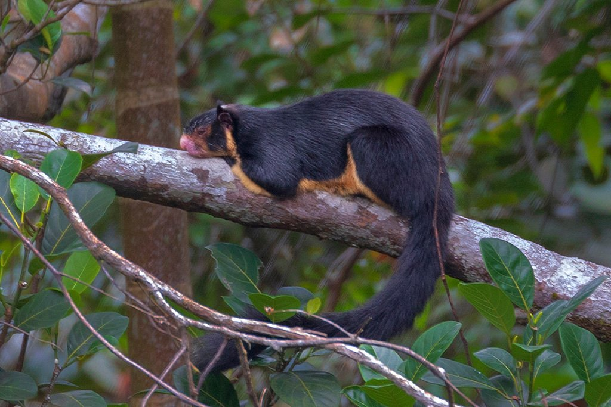
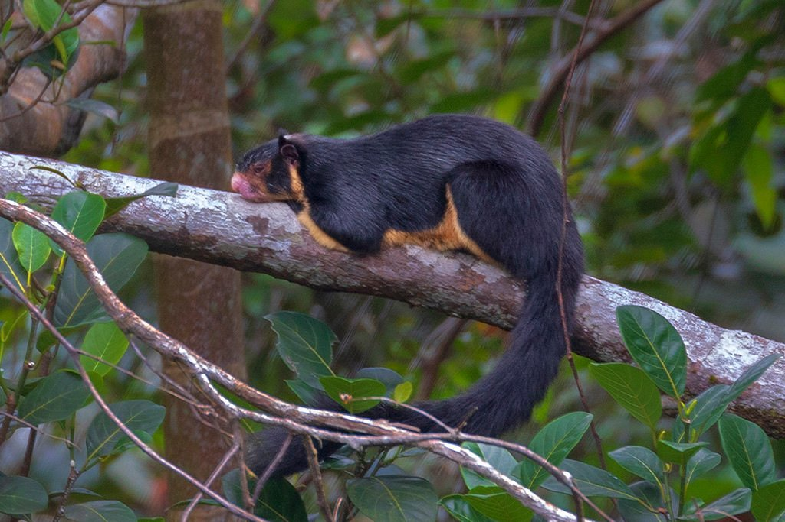
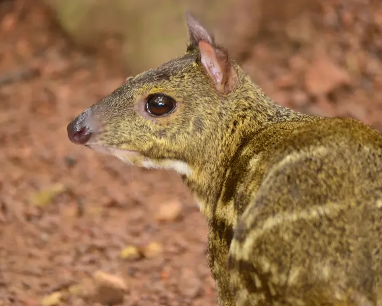
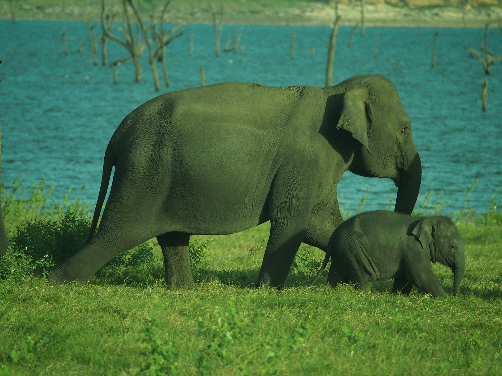

Sri Lankan Wildlife: Great Locations
Sinharaja Rainforest Reserve
 

Sinharaja Rainforest, a UNESCO World Heritage Site, is a biodiversity hotspot known for its rich flora and fauna Located in south-west Sri Lanka, Sinharaja is the country's last viable area of primary tropical rainforest. More than 60% of the trees are endemic and many of them are considered rare. There is much endemic wildlife, especially birds, but the reserve is also home to over 50% of Sri Lanka's endemic species of mammals and butterflies, as well as many kinds of insects, reptiles and rare amphibians.
Google location:
Horton Plains National Park


Horton Plains, with its vast grasslands and unique landscapes, offers sightings of diverse wildlife, including the elusive leopard. The park is also famous for the World's End viewpoint.Horton Plains is a beautiful and scenic plateau located in the central highlands of Sri Lanka. It is a part of the Central Highlands UNESCO World Heritage site and is situated in the Nuwara Eliya District. Horton Plains is known for its unique ecosystem, rich biodiversity, and stunning landscapes.
Google location:
Minneriya National Park
Minneriya National Park is a wildlife sanctuary and national park in Sri Lanka, located in the North Central Province. It is situated close to the town of Habarana and is part of the larger Cultural Triangle region. The park is renowned for its diverse ecosystems, wildlife, and as a gathering place for the largest Asian elephant gathering known as "The Gathering."
Google location:
Summary Table: Wildlife in above locations
| location | Animal Name | Interesting Facts | Image |
|---|---|---|---|
| Sinharaja | Purple-faced langur (Semnopithecus vetulus ) | Has a very shy nature |  |
| Horton planes | yellow-striped chevrotain(Moschiola kathygre) | They are the smallest hoofed mammals in the world. |  |
| Minneriya | Sri Lankan Elephant(Elephas maximus maximus) | Sri Lankan elephants are one of the few species that can recognize themselves in a mirror. Others are dolphins, great apes, and Asian elephants. |  |
| Explore the unique biodiversity of Sri Lanka by visiting these diverse wildlife locations. | |||